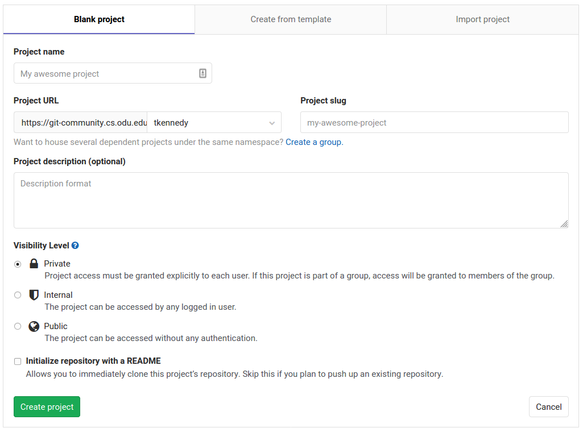
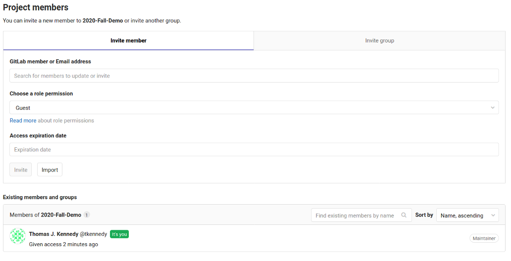
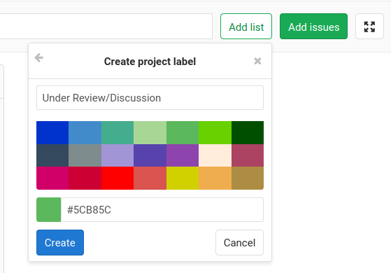
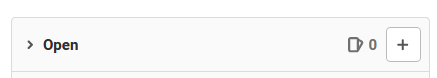
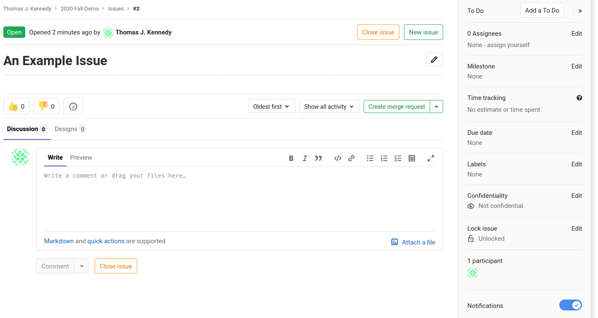

Tracking Work in GitLab
Thomas J. Kennedy
In CS 350… you tracked work on a semester project using OpenProject (or Redmine). GitLab provides a similar utility (i.e., an issue/task tracker).
You will need to create a repository on the CS GitLab server, https://git.cs.odu.edu/. You will need to log in using your CS account.
1 Getting Started - Setting Up a Repository
Start by creating a Git Repository:
- Navigate to https://git.cs.odu.edu/.
- Log in.
- Click the green New Project button.
You will be prompted to fill out a few pieces of information.

You need only fill out two pieces of information:
- Project name
- Visibility Level
For your project name… enter Year-Semester-Color. For example, team gold during the Fall 2020 semester would enter 2020-Fall-Gold. Set the Visibility Level to private. You will need to add your instructor and team members in a later step.
Go ahead and select the Initialize repository with a README checkbox. While you will not need to worry about the README now… it will come in handy later.
2 Getting Started - Adding Team Members
To add team members to your project… navigate to your repository. Select Members from the sidebar. On the resulting page enter each person’s CS Account.

Make sure to set each person’s role to Maintainer.
3 Setting Up a Task Board
To navigate to the Task Board:
- Click Issues in the sidebar.
- Click Boards
Let us ignore the default Developement board. Let us create a separate task board called Presentation Preparation.
- Click the dropdown menu in the top left of the page.
- Select Create new board.
- Enter Presentation Preparation as the board name.
Now we need to set up task categories… You may opt to use your own categories. However, we will set up the following for the sake of this example:
- Open
- Assigned
- In Progress
- Under Review/Discussion
- Closed
The Open and Closed categories are added by default.

To add the remaining categories, you will need to create lists:
- Click Add list.
- Enter a list name.
- Select a color.
- Click Create.
An example repository is available at https://git.cs.odu.edu/tkennedy/2020-fall-demo/-/boards/302.
4 Adding Issues
To add an issue… Click the plus button in the Open column, enter a title, and click the submit button.

To edit the issue, click on the title. You will be presented with a page with a description box and a sidebar.

The sidebar contains options to set assignees and due dates. You can update each issue by dragging it between columns in the task board.